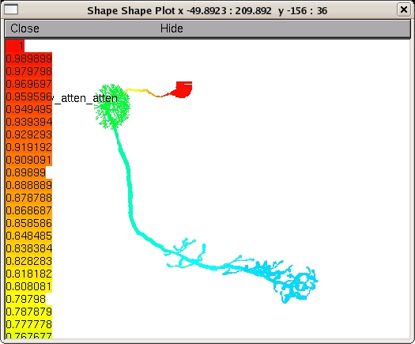

These NEURON files are for the model in the paper: Gouwens, NW and Wilson, RI (2009) Signal propagation in Drosophila central neurons. J Neurosci 29(19):6239-6249. Abstract: Drosophila is an important model organism for investigating neural development, neural morphology, neurophysiology, and neural correlates of behaviors. However, almost nothing is known about how electrical signals propagate in Drosophila neurons. Here we address these issues in antennal lobe projection neurons (PNs), one of the most well-studied classes of Drosophila neurons. We use morphological and electrophysiological data to deduce the passive membrane properties of these neurons and to build a compartmental model of their electrotonic structure. We find that these neurons are electrotonically extensive, and that a somatic recording electrode can only imperfectly control the voltage in the rest of the cell. Simulations predict that action potentials initiate at a location distant from the soma, in the proximal portion of the axon. Simulated synaptic input to a single dendritic branch propagates poorly to the rest of the cell and cannot match the size of real unitary synaptic events, but we can obtain a good fit to data when we model unitary input synapses as dozens of re- lease sites distributed across many dendritic branches. We also show that the true resting potential of these neurons is more hyperpolarized than previously thought, due to the experimental error introduced by the electrode seal conductance. A leak sodium conductance also contributes to the resting potential. Taken together, these findings have fundamental implications for how these neurons integrate their synaptic inputs. Our results also have important consequences for the design and interpretation of experiments aimed at understanding Drosophila neurons and neural circuits. To run: Remember to first compile the .mod files for your system: mswin: ------ Run mknrndll from the NEURON program group. Double click the mosinit.hoc file or one of the hoc files beginning with "figure..." Mac OS X: --------- drag and drop the folder (dm1_pn_model) onto the mknrndll icon. Drag and drop the mosinit.hoc file onto the nrngui icon. unix/linux: ----------- run "nrnivmodl" in the folder (dm1_pn_model), then "nrngui mosinit.hoc". After the simulation is started it will automatically generate plots similar to those in the paper. The neuronal morphologies are defined in the files dm1_morph_1.hoc, dm1_morph_2.hoc, and dm1_morph_3.hoc. For example running figure_4a_cell1.hoc (or pressing the cell 1 button after auto-launching from ModelDB or running mosinit.hoc) should lead to a figure like: 